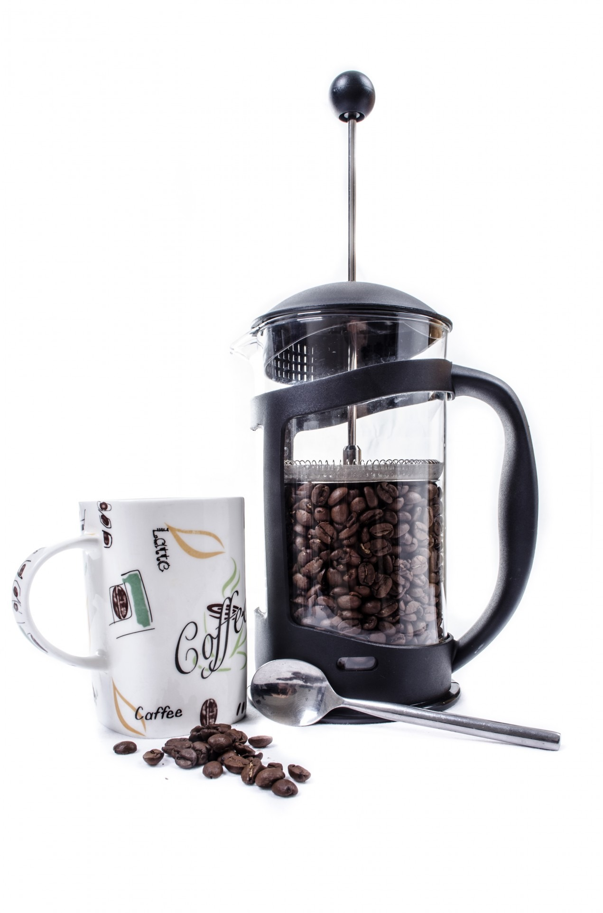
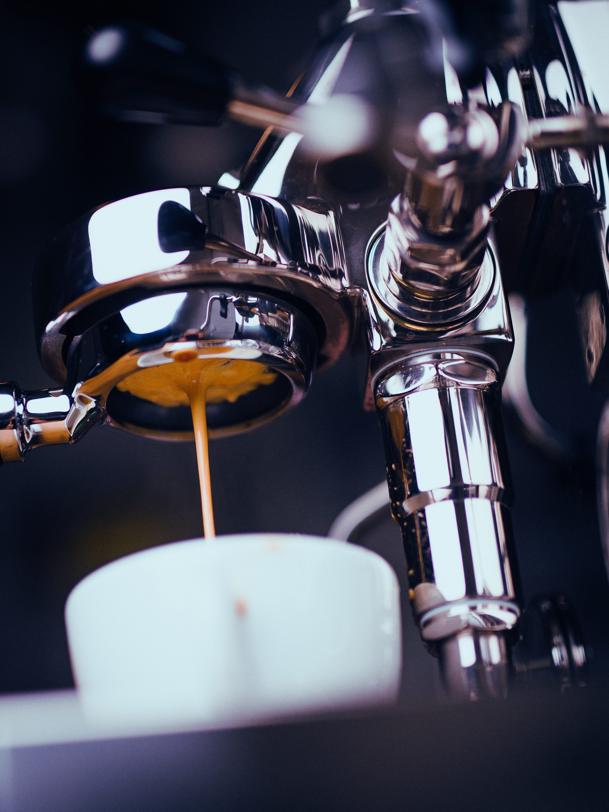

Espresso Machines

Professional Espresso Machine
$899.99
Commercial-grade machine with 15-bar pressure pump, PID temperature control, and dual boiler system.
Features: Built-in grinder, milk frother, programmable shots
Usage Tip: Preheat for 15 minutes before brewing for optimal temperature stability.

Home Espresso Maker
$399.99
Compact design perfect for home use. 15-bar pump with single boiler system.
Features: Steam wand, cup warmer, removable water tank
Usage Tip: Use filtered water and clean the group head daily for best results.

Manual Espresso Press
$179.99
Portable manual press for espresso on the go. No electricity required.
Features: Lightweight, travel-friendly, easy to clean
Usage Tip: Apply steady, even pressure for 20-30 seconds for optimal extraction.